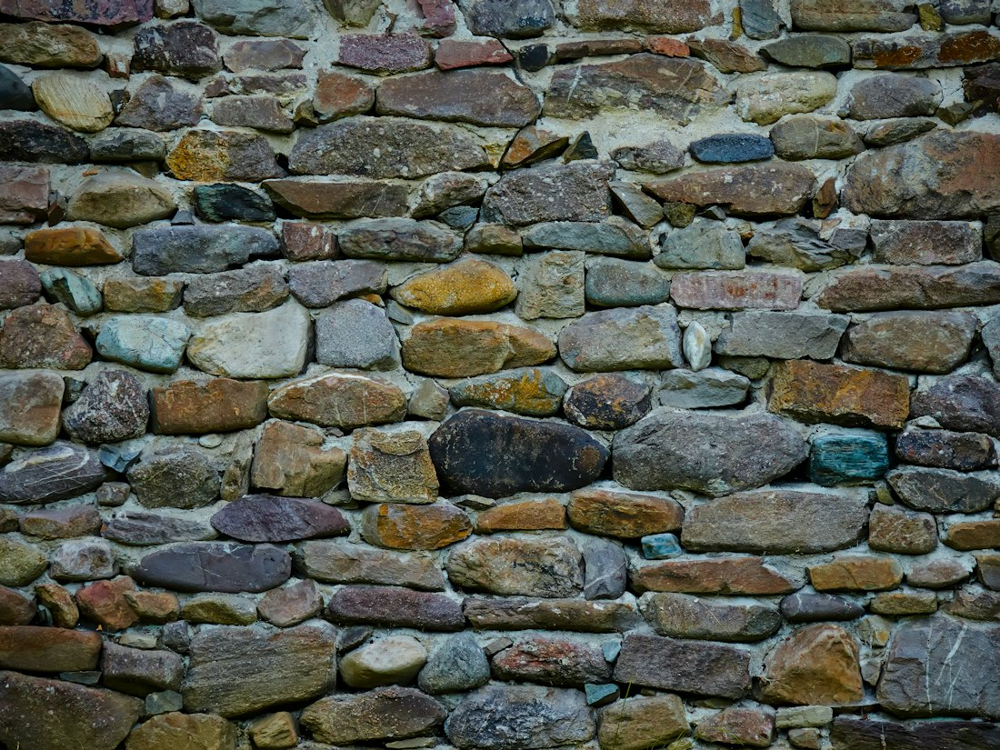
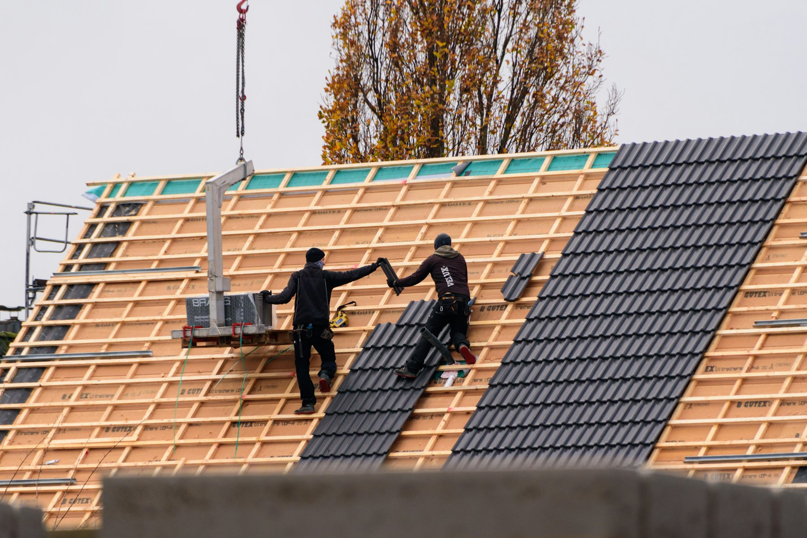
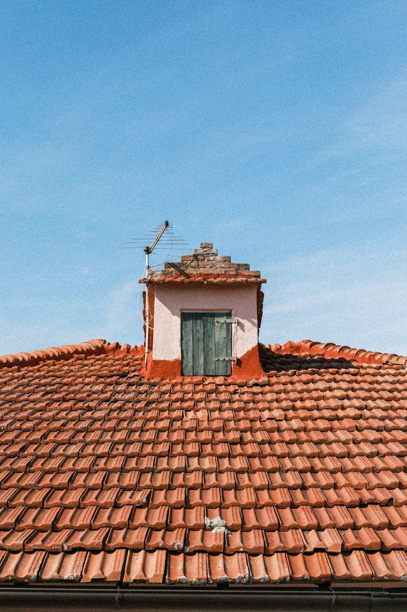

Brescia
Restauro nel Castello di Brescia
Lavori di restauro nel castello, compreso il ponte levatoio.

F.lli Marchetti · Montirone (BS) · dal 1994
Una tradizionale impresa edile bresciana: nuove costruzioni, tetti rifatti, case rinnovate e finiture in cemento fatte a mano.
01 · Cosa facciamo
Case e appartamenti rinnovati: demolizioni e sgomberi, murature e intonaci, sottofondi, assistenza agli impianti.
Tetti rifatti e tetti ventilati, su case private ed edifici pubblici, come la scuola media di Montirone.
Interventi su edifici storici e muri antichi, come i lavori di restauro nel Castello di Brescia.
Costruzioni nuove e isolamento termico a cappotto, per case che consumano meno. Deumidificazione con prodotti naturali.
Muro e pavimento stampato, pavimento spruzzato e acidificato, spatolato in cemento micro, effetto ruggine.
02 · Il cappotto, strato per strato
Si parte dal muro esistente, pulito e controllato.
Il cappotto: pannelli incollati e tassellati, a giunti sfalsati.
Annegata nel collante, tiene insieme tutto e ferma le crepe.
Uno strato uniforme e piano, pronto per la finitura.
Liscia, colorata o stampata effetto pietra, come il nostro muro stampato.
03 · Cantieri
Dal nostro profilo Instagram. Le foto qui sono di repertorio: al loro posto vanno le vostre.

Lavori di restauro nel castello, compreso il ponte levatoio.

Rifacimento completo del tetto della scuola, ripreso anche con il drone.
Prima, durante e dopo: facciate rifatte e meno dispersione di calore.
Una casa rinnovata dentro e fuori.
Sistemazione dello scolo delle acque piovane allo skatepark del paese.
04 · Chi siamo
Nuove Costruzioni Edili nasce nel 1994 dai fratelli Marchetti: un'impresa di famiglia che costruisce, ristruttura e restaura nel bresciano da oltre trent'anni.
Accanto al lavoro di cantiere ci siamo specializzati nelle finiture: muri e pavimenti stampati, cemento spatolato, effetto ruggine. Lavori di nicchia che chiedono mano e pazienza.
"Viene definita da un'equipe di marketing la sartoria edile."
Dalla nostra vecchia presentazione
05 · Come si parte
Ci raccontate il lavoro: tetto, facciata, casa da rinnovare o da costruire.
Veniamo a vedere, misuriamo e capiamo cosa serve davvero.
Una proposta scritta con lavori, materiali e tempi.
06 · Contatti
Via Belleguardo 36
25010 Montirone (BS)